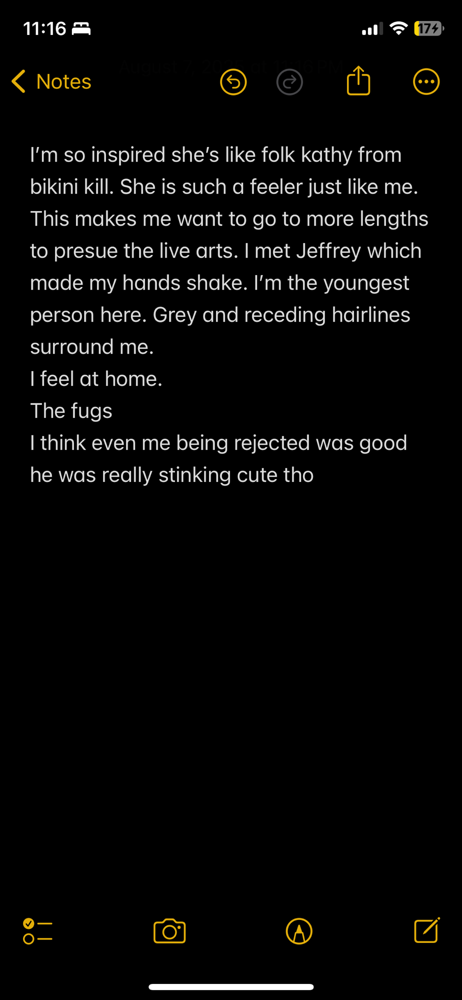

Protected: my brain is a goldmine.
OBVIOUSLY there is a playlist to set the mood. Of which I will deconstruct later, if u please.
This is a mixed media
- Acrylic
- Oil paint
- Matte medium
- Love letters
- Glitter gauche…
- Glitter gel pens
- Rabbit skin glue
Theonlytimeimeverpresentiswheimyackingup.
The full body sensation you get, starting in your lower back that lurches you forward. I missed the toilet.
…
Customers mumbling and scuffing their feet above me. Ugh. My head spins: vision doubling.
Frantic knocks on the door. “YO-” my coworker leaves a toothbrush and overly sweetened coffee outside. And darts back upstairs.
All I can focus on is the bitter scolding echoing from my earbuds…
“-you smoking weed was like you cheating on me!”
here comes another round but I can barely see the toilet.
Shaking is my next breath as I wipe the sludge off my mouth.
“-I’ll never forgive u. Goodbye.” ** click**
Curling into a ball on the freezing crusty tiles. My vision shrinks again. Bile swims around my mouth.
This isn’t the most complex painting to understand.
In retrospect all is fair in love and ***war. No point in further airing out dirty laundry though.
This painting was many months in the making as I wanted my hard work over the years (of writing these letters) to be memorialized in something beautiful, other than memories.
Absolution, kind of like a forgiveness and release in one (+ bonus of being a religious term. )
At the end of the day this painting is for me. It is absolution.
PSA: Jeffrey Lewis.
BREAKDOWN.
Basically since forever (the 90s) Jeffrey begun making low budget visuals to go with his writing/ music. This started as an overly larger picture book accompanied by a poem; and later led to what you’ve just seen. A man describing his version of the “great gatspy” completely in limericks.
This playful concert really resparked a lot of creative energy within me. Concerts don’t have to be *coughcough sematary* artists going out onstage preforming their greatest hits with a little banter.
This man humbly sold his own merch, took the time to talk to me, signed my zine with a heart and then complimented my hair. Safe to say he has a fan for life. Not only him though. “Grasping for straws” and his entire band were very friendly and even joined the crowd to dance with us. It was just in the little details that make such a impactful performance.
PS: if you take the time to watch this I’ll be throughly impressed AND you’ll get a goldstar+ a lil kiss.
Here are some jot notes I took that night.
Back by popular request : My notes app ❤

She started reading again ?! How long will this last…
Yes bitch I read by the lake KILL ME!
One quote from the book “Tomorrow Tomorrow Tomorrow” really stood out:
“[Character name] was always pretty, but she was beautiful when she was in love”
I feel like a lot of good parts of me come out when I’m in love. Though I’m trying to re direct this energy. No one has ever stayed in my life longer than a couple years so putting all this creative energy and time into people only ever ends up hurting me. I’m also mad at who I’ve chosen to love and who I haven’t given enough to. **summerize simply*
sixteenth note
In the beginning I kept track of how many days we’d been apart.
I’d count how many anniversaries we’d missed.
Though eventually I stopped …
I’ve begun watching the seasons pass, kept track by my evolving hair colours.
Months kept track by the next big concert
Weeks come and go until I see my closest friends again.
I let my French press steep as long
as my favourite song.
The time will pass anyway.
Mallory in an Alphabet
A good friend bought me the pinkpantheress zine.
It came with her word association alphabet.
This is my play on it with words that are me.
A- Animated
B- Bashful
C- Cat-lady
D- Devoted
E- Eclectic
F- Flowerlike
G- Giddy
H- Highbrow
I- Intimate
J- Juxtaposed
K- Klutzy
L- Lively
M- Mischievous
N- Nauseous
O- Openminded
P- Pink
Q- Qabalistic
R- Romantic
S- Sensitive
T- Tea
U- Urban
V- VAIN.
W- Whimsy
X- Xenial
Y- Yippppieee
Z- Zany